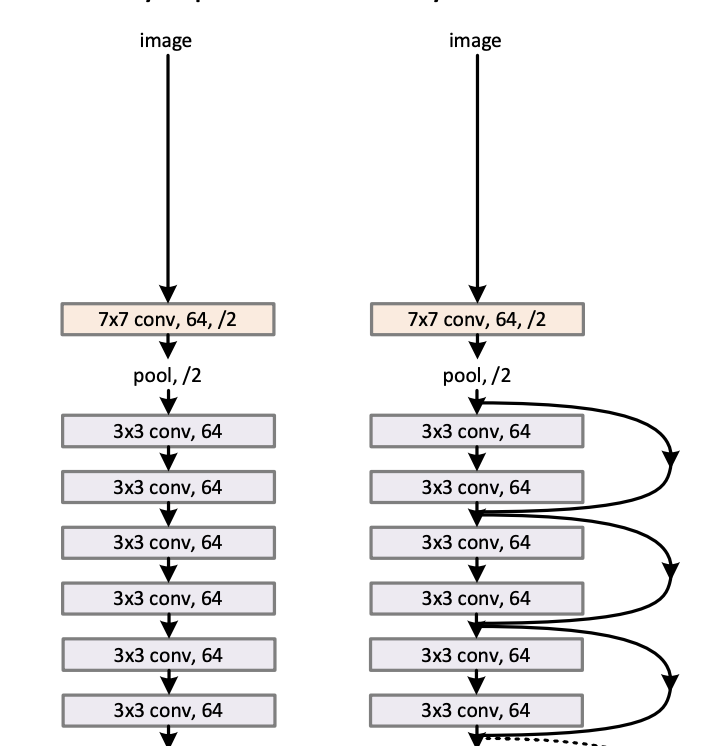
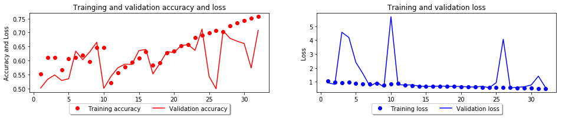
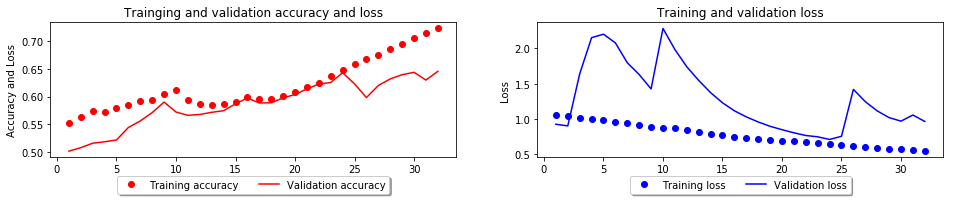
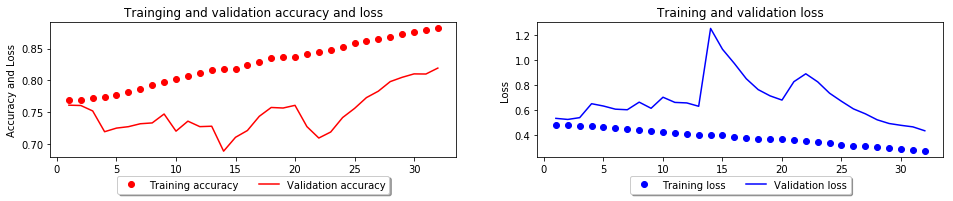

<!DOCTYPE html>
<html>
<head><meta name="generator" content="Hexo 3.8.0">
  <meta charset="utf-8">
  
  <title>딥러닝으로 개와 고양이를 분류하는 모델을 만들어보자 - resnet50 | CodingCrew</title>
  <meta name="viewport" content="width=device-width, initial-scale=1, maximum-scale=1">
  
  <meta name="keywords" content="MLKeras딥러닝으로 시리즈CNN">
  
  
    <meta name="google-site-verification" content="2YVImY1fo1thQTx-sHmMQhhE7x9aoPG7F593q2qt734">
  
  
  
  
    <meta name="naver-site-verification" content="6e851ae0213de51257ab8801ac88ee25b5581313">
  
  <meta name="description" content="사진으로 개 고양이 분류하기 - Ver. ResNet안녕하세요.저번 포스팅에서는 일반적인 CNN을 이용하여 네트워크를 구성하고, 개와 고양이 사진을 분류시키는 모델을 만들어 봤는데요.이번 시간에는 대회에서 사람보다 적은 에러율을 보였던 ResNet을 이용하여 모델을 만들어 보겠습니다.   토이 프로젝트의 튜토리얼이지만 모델 자체가 굉장히 무겁다보니 CPU로">
<meta name="keywords" content="ML,Keras,딥러닝으로 시리즈,CNN">
<meta property="og:type" content="article">
<meta property="og:title" content="딥러닝으로 개와 고양이를 분류하는 모델을 만들어보자 - ResNet50">
<meta property="og:url" content="https://codingcrews.github.io/2019/01/19/cat-dog-resnet/index.html">
<meta property="og:site_name" content="CodingCrew">
<meta property="og:description" content="사진으로 개 고양이 분류하기 - Ver. ResNet안녕하세요.저번 포스팅에서는 일반적인 CNN을 이용하여 네트워크를 구성하고, 개와 고양이 사진을 분류시키는 모델을 만들어 봤는데요.이번 시간에는 대회에서 사람보다 적은 에러율을 보였던 ResNet을 이용하여 모델을 만들어 보겠습니다.   토이 프로젝트의 튜토리얼이지만 모델 자체가 굉장히 무겁다보니 CPU로">
<meta property="og:locale" content="ko">
<meta property="og:image" content="https://codingcrews.github.io/2019/01/19/cat-dog-resnet/residual.png">
<meta property="og:image" content="https://codingcrews.github.io/2019/01/19/cat-dog-resnet/cat-dog-resnet_15_0.png">
<meta property="og:image" content="https://codingcrews.github.io/2019/01/19/cat-dog-resnet/cat-dog-resnet_18_0.png">
<meta property="og:image" content="https://codingcrews.github.io/2019/01/19/cat-dog-resnet/cat-dog-resnet_25_0.png">
<meta property="og:updated_time" content="2019-01-29T18:38:26.920Z">
<meta name="twitter:card" content="summary">
<meta name="twitter:title" content="딥러닝으로 개와 고양이를 분류하는 모델을 만들어보자 - ResNet50">
<meta name="twitter:description" content="사진으로 개 고양이 분류하기 - Ver. ResNet안녕하세요.저번 포스팅에서는 일반적인 CNN을 이용하여 네트워크를 구성하고, 개와 고양이 사진을 분류시키는 모델을 만들어 봤는데요.이번 시간에는 대회에서 사람보다 적은 에러율을 보였던 ResNet을 이용하여 모델을 만들어 보겠습니다.   토이 프로젝트의 튜토리얼이지만 모델 자체가 굉장히 무겁다보니 CPU로">
<meta name="twitter:image" content="https://codingcrews.github.io/2019/01/19/cat-dog-resnet/residual.png">
  
    <link rel="alternate" href="/atom.xml" title="CodingCrew" type="application/atom+xml">
  

  

  <link rel="icon" href="/css/images/logo.png">
  <link rel="apple-touch-icon" href="/css/images/logo.png">
  
    <link href="//fonts.googleapis.com/css?family=Source+Code+Pro" rel="stylesheet" type="text/css">
  
  <link href="https://fonts.googleapis.com/css?family=Open+Sans|Montserrat:700" rel="stylesheet" type="text/css">
  <link href="https://fonts.googleapis.com/css?family=Roboto:400,300,300italic,400italic" rel="stylesheet" type="text/css">
  <link href="//cdn.bootcss.com/font-awesome/4.6.3/css/font-awesome.min.css" rel="stylesheet">
  <style type="text/css">
    @font-face{font-family:futura-pt;src:url(https://use.typekit.net/af/9749f0/00000000000000000001008f/27/l?subset_id=2&fvd=n5) format("woff2");font-weight:500;font-style:normal;}
    @font-face{font-family:futura-pt;src:url(https://use.typekit.net/af/90cf9f/000000000000000000010091/27/l?subset_id=2&fvd=n7) format("woff2");font-weight:500;font-style:normal;}
    @font-face{font-family:futura-pt;src:url(https://use.typekit.net/af/8a5494/000000000000000000013365/27/l?subset_id=2&fvd=n4) format("woff2");font-weight:lighter;font-style:normal;}
    @font-face{font-family:futura-pt;src:url(https://use.typekit.net/af/d337d8/000000000000000000010095/27/l?subset_id=2&fvd=i4) format("woff2");font-weight:400;font-style:italic;}</style>
  <link rel="stylesheet" href="/css/style.css">

  <script src="/js/jquery-3.1.1.min.js"></script>
  <script src="/js/bootstrap.js"></script>

  <!-- Bootstrap core CSS -->
  <link rel="stylesheet" href="/css/bootstrap.css">

  
    <link rel="stylesheet" href="/css/dialog.css">
  

  

  
    <link rel="stylesheet" href="/css/header-post.css">
  

  

  

</head>
</html>


  <body data-spy="scroll" data-target="#toc" data-offset="50">


  
  <div id="container">
    <div id="wrap">
      
        <header>

    <div id="allheader" class="navbar navbar-default navbar-static-top" role="navigation">
        <div class="navbar-inner">
          
          <div class="container"> 
            <button type="button" class="navbar-toggle" data-toggle="collapse" data-target=".navbar-collapse">
              <span class="sr-only">Toggle navigation</span>
              <span class="icon-bar"></span>
              <span class="icon-bar"></span>
              <span class="icon-bar"></span>
            </button>

            
              <a class="brand" style="
                 margin-top: 0px;" href="#" data-toggle="modal" data-target="#myModal">
                  
              </a>
            
            
            <div class="navbar-collapse collapse">
              <ul class="hnav navbar-nav">
                
                  <li> <a class="main-nav-link" href="/">Home</a> </li>
                
                  <li> <a class="main-nav-link" href="/archives">Archives</a> </li>
                
                  <li> <a class="main-nav-link" href="/categories">Categories</a> </li>
                
                  <li> <a class="main-nav-link" href="/tags">Tags</a> </li>
                
                  <li> <a class="main-nav-link" href="/about">About</a> </li>
                
                  <li><div id="search-form-wrap">

    <form class="search-form">
        <input type="text" class="ins-search-input search-form-input" placeholder="">
        <button type="submit" class="search-form-submit"></button>
    </form>
    <div class="ins-search">
    <div class="ins-search-mask"></div>
    <div class="ins-search-container">
        <div class="ins-input-wrapper">
            <input type="text" class="ins-search-input" placeholder="Type something...">
            <span class="ins-close ins-selectable"><i class="fa fa-times-circle"></i></span>
        </div>
        <div class="ins-section-wrapper">
            <div class="ins-section-container"></div>
        </div>
    </div>
</div>
<script>
(function (window) {
    var INSIGHT_CONFIG = {
        TRANSLATION: {
            POSTS: 'Posts',
            PAGES: 'Pages',
            CATEGORIES: 'Categories',
            TAGS: 'Tags',
            UNTITLED: '(Untitled)',
        },
        ROOT_URL: '/',
        CONTENT_URL: '/content.json',
    };
    window.INSIGHT_CONFIG = INSIGHT_CONFIG;
})(window);
</script>
<script src="/js/insight.js"></script>

</div></li>
            </ul></div>
          </div>
                
      </div>
    </div>

</header>


      
            
      <div id="content" class="outer">
        
          <section id="main" style="float:none;"><article id="post-cat-dog-resnet" style="width: 75%; float:left;" class="article article-type-post" itemscope="" itemprop="blogPost">
  <div id="articleInner" class="article-inner">
    
    
      <header class="article-header">
        
  
    <h1 class="thumb" itemprop="name">
      딥러닝으로 개와 고양이를 분류하는 모델을 만들어보자 - ResNet50
    </h1>
  

      </header>
    
    <div class="article-meta">
      
	<a href="/2019/01/19/cat-dog-resnet/" class="article-date">
	  <time datetime="2019-01-18T18:21:43.000Z" itemprop="datePublished">2019-01-19</time>
	</a>

      
    <a class="article-category-link" href="/categories/ml/">ML</a>

      
	<a class="article-views">
	<span id="busuanzi_container_page_pv">
		PV:<span id="busuanzi_value_page_pv"></span>
	</span>
	</a>

      

    </div>
    <div class="article-entry" itemprop="articleBody">
      
        <h1 id="사진으로-개-고양이-분류하기-Ver-ResNet"><a href="#사진으로-개-고양이-분류하기-Ver-ResNet" class="headerlink" title="사진으로 개 고양이 분류하기 - Ver. ResNet"></a>사진으로 개 고양이 분류하기 - Ver. ResNet</h1><p>안녕하세요.<br>저번 포스팅에서는 일반적인 CNN을 이용하여 네트워크를 구성하고, 개와 고양이 사진을 분류시키는 모델을 만들어 봤는데요.<br>이번 시간에는 대회에서 사람보다 적은 에러율을 보였던 ResNet을 이용하여 모델을 만들어 보겠습니다.  </p>
<p>토이 프로젝트의 튜토리얼이지만 모델 자체가 굉장히 무겁다보니 CPU로는 극악의 시간이 소요됩니다.<br>꼭 GPU 환경을 구축하시고 진행하세요.  </p>
<p>데스크톱으로 GPU 학습환경 구성이 어려우시다면, <a href="/2019/01/15/deeplearning-gpu/">AWS로 GPU기반의 딥러닝 학습환경 구축하기</a> 포스팅을 참고하세요.  </p>
<h1 id="ResNet"><a href="#ResNet" class="headerlink" title="ResNet"></a>ResNet</h1><p>ResNet 모델을 사용하기 전에 간단하게만 알아봅시다.<br>참고한 논문은 <a href="https://arxiv.org/pdf/1512.03385.pdf" target="_blank" rel="noopener">여기</a>에서 확인하실 수 있고, 가장 흥미로운 부분은 Residual Network 입니다.  </p>
<p>기존의 CNN 학습 방법으로 VGG의 구현을 살짝 보겠습니다.<br><br>위 이미지에서 보면 좌측의 네트워크는 저희가 지금까지 만든 각 레이어를 쭉 일자로 연결한 형태이고,<br>우측의 Residual을 보면 이전 레이어에서 나온 데이터를 한단계를 건너뛰어 재사용하는걸 볼 수 있습니다.<br>좌측의 평평한 레이어에서 하나의 지름길을 만들어 한단계를 넘어 다음 레이어에 연결시킨 부분이 인상적입니다.<br>이러한 부분으로 인해 VGG모델에 비해 깊은 레이어를 가지고 있지만, 실제 사용시에는 굉장히 빠른 속도를 보여줍니다.<br>다만 학습시간이 오래걸리는건 당연하겠죠 ?</p>
<p>어떤 강의에서는 이 Residual network를 Fast network라고 표현한답니다.  </p>
<p>좀 더 자세한 설명은 해당 논문을 참고하시기 바랍니다.</p>
<h1 id="Dataset"><a href="#Dataset" class="headerlink" title="Dataset"></a>Dataset</h1><p>데이터셋은 이전 포스팅과 마찬가지로 동일한 데이터셋인 kaggle에서 제공하는 데이터셋을 이용할 예정입니다.  </p>
<h2 id="Download"><a href="#Download" class="headerlink" title="Download"></a>Download</h2><p>직접 데이터셋을 배포하진 않고 있습니다.<br>데이터셋은 <a href="https://www.kaggle.com/tongpython/cat-and-dog" target="_blank" rel="noopener">여기</a>에서 직접 다운로드 받으실 수 있고, kaggle api를 통하여 받으실 수 있습니다.  </p>
<p>저희는 저번 포스팅과 동일하게 datasets이란 폴더에 데이터셋을 넣어두고 사용하도록 하겠습니다.  </p>
<figure class="highlight plain"><table><tr><td class="gutter"><pre><span class="line">1</span><br><span class="line">2</span><br><span class="line">3</span><br><span class="line">4</span><br><span class="line">5</span><br><span class="line">6</span><br><span class="line">7</span><br><span class="line">8</span><br><span class="line">9</span><br><span class="line">10</span><br><span class="line">11</span><br><span class="line">12</span><br></pre></td><td class="code"><pre><span class="line">datasets</span><br><span class="line">└── cat-and-dog</span><br><span class="line">    ├── test_set</span><br><span class="line">    │   ├── cats</span><br><span class="line">    │   │   └── datas...</span><br><span class="line">    │   └── dogs</span><br><span class="line">    │       └── datas...</span><br><span class="line">    └── training_set</span><br><span class="line">        ├── cats</span><br><span class="line">        │   └── datas...</span><br><span class="line">        └── dogs</span><br><span class="line">            └── datas...</span><br></pre></td></tr></table></figure>
<p>이와 같은 형태의 구성이 되어 있다고 가정합니다.</p>
<h2 id="데이터-로드"><a href="#데이터-로드" class="headerlink" title="데이터 로드"></a>데이터 로드</h2><p>마찬가지로 저번 포스팅과 동일하게 데이터 증식을 위한 제너레이터로 데이터를 읽어옵니다.<br>관련된 설명은 이전 포스팅을 참고해주세요.  </p>
<figure class="highlight python"><table><tr><td class="gutter"><pre><span class="line">1</span><br><span class="line">2</span><br><span class="line">3</span><br><span class="line">4</span><br><span class="line">5</span><br><span class="line">6</span><br><span class="line">7</span><br><span class="line">8</span><br><span class="line">9</span><br><span class="line">10</span><br><span class="line">11</span><br><span class="line">12</span><br><span class="line">13</span><br><span class="line">14</span><br><span class="line">15</span><br><span class="line">16</span><br><span class="line">17</span><br><span class="line">18</span><br><span class="line">19</span><br><span class="line">20</span><br><span class="line">21</span><br><span class="line">22</span><br><span class="line">23</span><br><span class="line">24</span><br><span class="line">25</span><br><span class="line">26</span><br><span class="line">27</span><br><span class="line">28</span><br><span class="line">29</span><br></pre></td><td class="code"><pre><span class="line"><span class="keyword">import</span> os</span><br><span class="line"><span class="keyword">from</span> tensorflow.keras.preprocessing.image <span class="keyword">import</span> ImageDataGenerator</span><br><span class="line"></span><br><span class="line"><span class="comment"># 위노그라드 알고리즘 설정</span></span><br><span class="line">os.environ[<span class="string">'TF_ENABLE_WINOGRAD_NONFUSED'</span>] = <span class="string">'1'</span></span><br><span class="line"></span><br><span class="line">rootPath = <span class="string">'./datasets/cat-and-dog'</span></span><br><span class="line"></span><br><span class="line">imageGenerator = ImageDataGenerator(</span><br><span class="line">    rescale=<span class="number">1.</span>/<span class="number">255</span>,</span><br><span class="line">    rotation_range=<span class="number">20</span>,</span><br><span class="line">    width_shift_range=<span class="number">0.1</span>,</span><br><span class="line">    height_shift_range=<span class="number">0.1</span>,</span><br><span class="line">    brightness_range=[<span class="number">.2</span>, <span class="number">.2</span>],</span><br><span class="line">    horizontal_flip=<span class="keyword">True</span>,</span><br><span class="line">    validation_split=<span class="number">.1</span></span><br><span class="line">)</span><br><span class="line"></span><br><span class="line">trainGen = imageGenerator.flow_from_directory(</span><br><span class="line">    os.path.join(rootPath, <span class="string">'training_set'</span>),</span><br><span class="line">    target_size=(<span class="number">64</span>, <span class="number">64</span>),</span><br><span class="line">    subset=<span class="string">'training'</span></span><br><span class="line">)</span><br><span class="line"></span><br><span class="line">validationGen = imageGenerator.flow_from_directory(</span><br><span class="line">    os.path.join(rootPath, <span class="string">'training_set'</span>),</span><br><span class="line">    target_size=(<span class="number">64</span>, <span class="number">64</span>),</span><br><span class="line">    subset=<span class="string">'validation'</span></span><br><span class="line">)</span><br></pre></td></tr></table></figure>
<pre><code>Found 7205 images belonging to 2 classes.
Found 800 images belonging to 2 classes.
</code></pre><h1 id="모델-구성"><a href="#모델-구성" class="headerlink" title="모델 구성"></a>모델 구성</h1><p>텐서플로 케라스에서 ResNet 모델을 제공해주고 있습니다.<br>저희는 해당 모델의 구성을 그대로 가져다 사용하도록 하겠습니다.  </p>
<figure class="highlight python"><table><tr><td class="gutter"><pre><span class="line">1</span><br><span class="line">2</span><br><span class="line">3</span><br><span class="line">4</span><br><span class="line">5</span><br><span class="line">6</span><br><span class="line">7</span><br><span class="line">8</span><br></pre></td><td class="code"><pre><span class="line"><span class="keyword">from</span> tensorflow.keras.applications <span class="keyword">import</span> ResNet50</span><br><span class="line"><span class="keyword">from</span> tensorflow.keras.models <span class="keyword">import</span> Sequential</span><br><span class="line"><span class="keyword">from</span> tensorflow.keras <span class="keyword">import</span> layers</span><br><span class="line"></span><br><span class="line">model = Sequential()</span><br><span class="line">model.add(ResNet50(include_top=<span class="keyword">True</span>, weights=<span class="keyword">None</span>, input_shape=(<span class="number">64</span>, <span class="number">64</span>, <span class="number">3</span>), classes=<span class="number">2</span>))</span><br><span class="line"></span><br><span class="line">model.summary()</span><br></pre></td></tr></table></figure>
<pre><code>_________________________________________________________________
Layer (type)                 Output Shape              Param #   
=================================================================
resnet50 (Model)             (None, 2)                 23591810  
=================================================================
Total params: 23,591,810
Trainable params: 23,538,690
Non-trainable params: 53,120
_________________________________________________________________
</code></pre><p><strong>include_top</strong><br>    모델의 최상위 Fully Connected 레이어를 추가할것인지 추가하지 않을것인지에 대한 토글입니다.  </p>
<p><strong>weights</strong><br>    기존 학습된 가중치 데이터를 읽어들일 가중치 경로입니다. imagenet이라 입력하면 imagenet 데이터셋을 기반으로 기존 학습된 가중치 데이터를 불러옵니다.  </p>
<p><strong>input_shape</strong><br>    입력값의 형태를 지정합니다. 3D 텐서를 입력해야합니다.  </p>
<p><strong>classes</strong><br>    모델의 마지막 출력 차원을 지정합니다.  </p>
<p>저희는 ResNet50 모델을 이용하여 개와 고양이를 학습하는 모델을 학습시켜보도록 하겠습니다.  </p>
<h2 id="모델-컴파일"><a href="#모델-컴파일" class="headerlink" title="모델 컴파일"></a>모델 컴파일</h2><p>모델의 구성이 완료된 이후에는 항상 컴파일이 필요합니다.</p>
<figure class="highlight python"><table><tr><td class="gutter"><pre><span class="line">1</span><br><span class="line">2</span><br><span class="line">3</span><br><span class="line">4</span><br><span class="line">5</span><br></pre></td><td class="code"><pre><span class="line">model.compile(</span><br><span class="line">    optimizer=<span class="string">'adam'</span>,</span><br><span class="line">    loss=<span class="string">'binary_crossentropy'</span>, </span><br><span class="line">    metrics=[<span class="string">'acc'</span>],</span><br><span class="line">)</span><br></pre></td></tr></table></figure>
<h2 id="학습-시작"><a href="#학습-시작" class="headerlink" title="학습 시작"></a>학습 시작</h2><p>ResNet 모델의 학습이 시작됩니다.</p>
<figure class="highlight python"><table><tr><td class="gutter"><pre><span class="line">1</span><br><span class="line">2</span><br><span class="line">3</span><br><span class="line">4</span><br><span class="line">5</span><br><span class="line">6</span><br><span class="line">7</span><br><span class="line">8</span><br></pre></td><td class="code"><pre><span class="line">epochs = <span class="number">32</span></span><br><span class="line">history = model.fit_generator(</span><br><span class="line">    trainGen, </span><br><span class="line">    epochs=epochs,</span><br><span class="line">    steps_per_epoch=trainGen.samples / epochs, </span><br><span class="line">    validation_data=validationGen,</span><br><span class="line">    validation_steps=trainGen.samples / epochs,</span><br><span class="line">)</span><br></pre></td></tr></table></figure>
<pre><code>Epoch 1/32
226/225 [==============================] - 100s 441ms/step - loss: 1.0603 - acc: 0.5530 - val_loss: 0.9258 - val_acc: 0.5022
Epoch 2/32
226/225 [==============================] - 80s 355ms/step - loss: 0.9658 - acc: 0.6102 - val_loss: 0.8094 - val_acc: 0.5333
Epoch 3/32
226/225 [==============================] - 80s 354ms/step - loss: 0.9366 - acc: 0.6113 - val_loss: 4.5736 - val_acc: 0.5488
Epoch 4/32
226/225 [==============================] - 80s 354ms/step - loss: 0.9635 - acc: 0.5666 - val_loss: 4.1998 - val_acc: 0.5292
Epoch 5/32
226/225 [==============================] - 80s 354ms/step - loss: 0.8955 - acc: 0.6076 - val_loss: 2.3943 - val_acc: 0.5353
Epoch 6/32
226/225 [==============================] - 80s 353ms/step - loss: 0.8526 - acc: 0.6103 - val_loss: 1.5856 - val_acc: 0.6340
Epoch 7/32
226/225 [==============================] - 80s 354ms/step - loss: 0.8663 - acc: 0.6193 - val_loss: 0.6723 - val_acc: 0.6033
Epoch 8/32
226/225 [==============================] - 80s 353ms/step - loss: 0.8656 - acc: 0.5956 - val_loss: 0.9622 - val_acc: 0.6312
Epoch 9/32
226/225 [==============================] - 80s 354ms/step - loss: 0.7594 - acc: 0.6465 - val_loss: 0.6115 - val_acc: 0.6655
Epoch 10/32
226/225 [==============================] - 80s 354ms/step - loss: 0.8273 - acc: 0.6457 - val_loss: 5.6990 - val_acc: 0.5010
Epoch 11/32
226/225 [==============================] - 80s 355ms/step - loss: 0.8979 - acc: 0.5210 - val_loss: 0.7881 - val_acc: 0.5429
Epoch 12/32
226/225 [==============================] - 80s 355ms/step - loss: 0.7378 - acc: 0.5575 - val_loss: 0.7642 - val_acc: 0.5741
Epoch 13/32
226/225 [==============================] - 80s 354ms/step - loss: 0.6924 - acc: 0.5781 - val_loss: 0.7743 - val_acc: 0.5873
Epoch 14/32
226/225 [==============================] - 80s 355ms/step - loss: 0.6797 - acc: 0.5925 - val_loss: 0.6813 - val_acc: 0.5864
Epoch 15/32
226/225 [==============================] - 80s 353ms/step - loss: 0.6758 - acc: 0.6071 - val_loss: 0.6564 - val_acc: 0.6355
Epoch 16/32
226/225 [==============================] - 80s 352ms/step - loss: 0.6618 - acc: 0.6306 - val_loss: 0.6620 - val_acc: 0.6398
Epoch 17/32
226/225 [==============================] - 80s 354ms/step - loss: 0.6850 - acc: 0.5840 - val_loss: 0.6861 - val_acc: 0.5525
Epoch 18/32
226/225 [==============================] - 80s 355ms/step - loss: 0.6746 - acc: 0.5918 - val_loss: 0.6706 - val_acc: 0.5904
Epoch 19/32
226/225 [==============================] - 81s 357ms/step - loss: 0.6513 - acc: 0.6269 - val_loss: 0.6519 - val_acc: 0.6323
Epoch 20/32
226/225 [==============================] - 80s 353ms/step - loss: 0.6425 - acc: 0.6363 - val_loss: 0.6568 - val_acc: 0.6289
Epoch 21/32
226/225 [==============================] - 80s 353ms/step - loss: 0.6306 - acc: 0.6528 - val_loss: 0.6282 - val_acc: 0.6532
Epoch 22/32
226/225 [==============================] - 80s 356ms/step - loss: 0.6204 - acc: 0.6574 - val_loss: 0.6147 - val_acc: 0.6574
Epoch 23/32
226/225 [==============================] - 80s 352ms/step - loss: 0.5968 - acc: 0.6823 - val_loss: 0.6732 - val_acc: 0.6366
Epoch 24/32
226/225 [==============================] - 80s 353ms/step - loss: 0.5842 - acc: 0.6910 - val_loss: 0.5618 - val_acc: 0.7125
Epoch 25/32
226/225 [==============================] - 80s 352ms/step - loss: 0.5762 - acc: 0.6996 - val_loss: 0.9354 - val_acc: 0.5436
Epoch 26/32
226/225 [==============================] - 80s 353ms/step - loss: 0.5724 - acc: 0.7059 - val_loss: 4.0694 - val_acc: 0.4996
Epoch 27/32
226/225 [==============================] - 80s 354ms/step - loss: 0.5702 - acc: 0.7041 - val_loss: 0.5508 - val_acc: 0.7060
Epoch 28/32
226/225 [==============================] - 80s 353ms/step - loss: 0.5459 - acc: 0.7235 - val_loss: 0.5939 - val_acc: 0.6792
Epoch 29/32
226/225 [==============================] - 80s 352ms/step - loss: 0.5353 - acc: 0.7347 - val_loss: 0.6381 - val_acc: 0.6692
Epoch 30/32
226/225 [==============================] - 80s 354ms/step - loss: 0.5242 - acc: 0.7404 - val_loss: 0.7704 - val_acc: 0.6610
Epoch 31/32
226/225 [==============================] - 80s 355ms/step - loss: 0.5159 - acc: 0.7481 - val_loss: 1.4030 - val_acc: 0.5737
Epoch 32/32
226/225 [==============================] - 80s 352ms/step - loss: 0.4922 - acc: 0.7576 - val_loss: 0.5993 - val_acc: 0.7081
</code></pre><h2 id="학습결과-시각화"><a href="#학습결과-시각화" class="headerlink" title="학습결과 시각화"></a>학습결과 시각화</h2><figure class="highlight python"><table><tr><td class="gutter"><pre><span class="line">1</span><br><span class="line">2</span><br><span class="line">3</span><br><span class="line">4</span><br><span class="line">5</span><br><span class="line">6</span><br><span class="line">7</span><br><span class="line">8</span><br><span class="line">9</span><br><span class="line">10</span><br><span class="line">11</span><br><span class="line">12</span><br><span class="line">13</span><br><span class="line">14</span><br><span class="line">15</span><br><span class="line">16</span><br><span class="line">17</span><br><span class="line">18</span><br><span class="line">19</span><br><span class="line">20</span><br><span class="line">21</span><br><span class="line">22</span><br><span class="line">23</span><br><span class="line">24</span><br><span class="line">25</span><br><span class="line">26</span><br><span class="line">27</span><br><span class="line">28</span><br><span class="line">29</span><br><span class="line">30</span><br><span class="line">31</span><br><span class="line">32</span><br><span class="line">33</span><br><span class="line">34</span><br><span class="line">35</span><br></pre></td><td class="code"><pre><span class="line"><span class="keyword">import</span> matplotlib.pyplot <span class="keyword">as</span> plt</span><br><span class="line"></span><br><span class="line"><span class="function"><span class="keyword">def</span> <span class="title">show_graph</span><span class="params">(history_dict)</span>:</span></span><br><span class="line">    accuracy = history_dict[<span class="string">'acc'</span>]</span><br><span class="line">    val_accuracy = history_dict[<span class="string">'val_acc'</span>]</span><br><span class="line">    loss = history_dict[<span class="string">'loss'</span>]</span><br><span class="line">    val_loss = history_dict[<span class="string">'val_loss'</span>]</span><br><span class="line"></span><br><span class="line">    epochs = range(<span class="number">1</span>, len(loss) + <span class="number">1</span>)</span><br><span class="line">    </span><br><span class="line">    plt.figure(figsize=(<span class="number">16</span>, <span class="number">1</span>))</span><br><span class="line">    </span><br><span class="line">    plt.subplot(<span class="number">121</span>)</span><br><span class="line">    plt.subplots_adjust(top=<span class="number">2</span>)</span><br><span class="line">    plt.plot(epochs, accuracy, <span class="string">'ro'</span>, label=<span class="string">'Training accuracy'</span>)</span><br><span class="line">    plt.plot(epochs, val_accuracy, <span class="string">'r'</span>, label=<span class="string">'Validation accuracy'</span>)</span><br><span class="line">    plt.title(<span class="string">'Trainging and validation accuracy and loss'</span>)</span><br><span class="line">    plt.xlabel(<span class="string">'Epochs'</span>)</span><br><span class="line">    plt.ylabel(<span class="string">'Accuracy and Loss'</span>)</span><br><span class="line"></span><br><span class="line">    plt.legend(loc=<span class="string">'upper center'</span>, bbox_to_anchor=(<span class="number">0.5</span>, <span class="number">-0.1</span>),</span><br><span class="line">              fancybox=<span class="keyword">True</span>, shadow=<span class="keyword">True</span>, ncol=<span class="number">5</span>)</span><br><span class="line"><span class="comment">#     plt.legend(bbox_to_anchor=(1, -0.1))</span></span><br><span class="line"></span><br><span class="line">    plt.subplot(<span class="number">122</span>)</span><br><span class="line">    plt.plot(epochs, loss, <span class="string">'bo'</span>, label=<span class="string">'Training loss'</span>)</span><br><span class="line">    plt.plot(epochs, val_loss, <span class="string">'b'</span>, label=<span class="string">'Validation loss'</span>)</span><br><span class="line">    plt.title(<span class="string">'Training and validation loss'</span>)</span><br><span class="line">    plt.xlabel(<span class="string">'Epochs'</span>)</span><br><span class="line">    plt.ylabel(<span class="string">'Loss'</span>)</span><br><span class="line">    plt.legend(loc=<span class="string">'upper center'</span>, bbox_to_anchor=(<span class="number">0.5</span>, <span class="number">-0.1</span>),</span><br><span class="line">          fancybox=<span class="keyword">True</span>, shadow=<span class="keyword">True</span>, ncol=<span class="number">5</span>)</span><br><span class="line"><span class="comment">#     plt.legend(bbox_to_anchor=(1, 0))</span></span><br><span class="line"></span><br><span class="line">    plt.show()</span><br></pre></td></tr></table></figure>
<figure class="highlight python"><table><tr><td class="gutter"><pre><span class="line">1</span><br></pre></td><td class="code"><pre><span class="line">show_graph(history.history)</span><br></pre></td></tr></table></figure>
<p></p>
<p>그래프의 변동이 심하니 지수 이동 평균값을 구하여 그래프를 다시 그립니다.</p>
<figure class="highlight python"><table><tr><td class="gutter"><pre><span class="line">1</span><br><span class="line">2</span><br><span class="line">3</span><br><span class="line">4</span><br><span class="line">5</span><br><span class="line">6</span><br><span class="line">7</span><br><span class="line">8</span><br><span class="line">9</span><br></pre></td><td class="code"><pre><span class="line"><span class="function"><span class="keyword">def</span> <span class="title">smooth_curve</span><span class="params">(points, factor=<span class="number">.8</span>)</span>:</span></span><br><span class="line">    smoothed_points = []</span><br><span class="line">    <span class="keyword">for</span> point <span class="keyword">in</span> points:</span><br><span class="line">        <span class="keyword">if</span> smoothed_points:</span><br><span class="line">            previous = smoothed_points[<span class="number">-1</span>]</span><br><span class="line">            smoothed_points.append(previous * factor + point * (<span class="number">1</span> - factor))</span><br><span class="line">        <span class="keyword">else</span>:</span><br><span class="line">            smoothed_points.append(point)</span><br><span class="line">    <span class="keyword">return</span> smoothed_points</span><br></pre></td></tr></table></figure>
<figure class="highlight python"><table><tr><td class="gutter"><pre><span class="line">1</span><br><span class="line">2</span><br><span class="line">3</span><br><span class="line">4</span><br></pre></td><td class="code"><pre><span class="line">smooth_data = &#123;&#125;</span><br><span class="line"><span class="keyword">for</span> key, val <span class="keyword">in</span> history.history.items():</span><br><span class="line">    smooth_data[key] = smooth_curve(val)</span><br><span class="line">show_graph(smooth_data)</span><br></pre></td></tr></table></figure>
<p></p>
<p>현재 Tesla K80으로 약 40분을 훈련시켰는데, 그래프로만 봐서는 과소적합일 가능성이 보입니다.<br>조금 더 학습을 시켜보면 알수 있겠네요.</p>
<p>모델의 평가를 해본 이후에 32에폭을 더 돌려보도록 하겠습니다.</p>
<h3 id="모델-중간-평가"><a href="#모델-중간-평가" class="headerlink" title="모델 중간 평가"></a>모델 중간 평가</h3><p>현재 모델을 기준으로 테스트셋의 정확도와 손실율을 구해보겠습니다.<br>테스트셋의 경우 rescale만 적용하여 원본 이미지 그대로 사용합니다.  </p>
<figure class="highlight python"><table><tr><td class="gutter"><pre><span class="line">1</span><br><span class="line">2</span><br><span class="line">3</span><br><span class="line">4</span><br><span class="line">5</span><br><span class="line">6</span><br><span class="line">7</span><br><span class="line">8</span><br><span class="line">9</span><br><span class="line">10</span><br></pre></td><td class="code"><pre><span class="line">testGenerator = ImageDataGenerator(</span><br><span class="line">    rescale=<span class="number">1.</span>/<span class="number">255</span></span><br><span class="line">)</span><br><span class="line"></span><br><span class="line">testGen = imageGenerator.flow_from_directory(</span><br><span class="line">    os.path.join(rootPath, <span class="string">'test_set'</span>),</span><br><span class="line">    target_size=(<span class="number">64</span>, <span class="number">64</span>),</span><br><span class="line">)</span><br><span class="line"></span><br><span class="line">model.evaluate_generator(testGen)</span><br></pre></td></tr></table></figure>
<pre><code>Found 2023 images belonging to 2 classes.


[0.6065594666792624, 0.7162629758080102]
</code></pre><h2 id="모델-추가-학습"><a href="#모델-추가-학습" class="headerlink" title="모델 추가 학습"></a>모델 추가 학습</h2><p>이전의 그래프로는 과소적합일 가능성이 있기 때문에 32에폭만 추가적으로 더 학습을 진행해보겠습니다.  </p>
<figure class="highlight python"><table><tr><td class="gutter"><pre><span class="line">1</span><br><span class="line">2</span><br><span class="line">3</span><br><span class="line">4</span><br><span class="line">5</span><br><span class="line">6</span><br><span class="line">7</span><br><span class="line">8</span><br></pre></td><td class="code"><pre><span class="line">epochs = <span class="number">32</span></span><br><span class="line">history = model.fit_generator(</span><br><span class="line">    trainGen, </span><br><span class="line">    epochs=epochs,</span><br><span class="line">    steps_per_epoch=trainGen.samples / epochs, </span><br><span class="line">    validation_data=validationGen,</span><br><span class="line">    validation_steps=trainGen.samples / epochs,</span><br><span class="line">)</span><br></pre></td></tr></table></figure>
<pre><code>Epoch 1/32
226/225 [==============================] - 80s 355ms/step - loss: 0.4832 - acc: 0.7692 - val_loss: 0.5355 - val_acc: 0.7609
Epoch 2/32
226/225 [==============================] - 80s 353ms/step - loss: 0.4713 - acc: 0.7720 - val_loss: 0.4927 - val_acc: 0.7584
Epoch 3/32
226/225 [==============================] - 80s 356ms/step - loss: 0.4615 - acc: 0.7808 - val_loss: 0.5980 - val_acc: 0.7175
Epoch 4/32
226/225 [==============================] - 80s 352ms/step - loss: 0.4611 - acc: 0.7821 - val_loss: 1.0948 - val_acc: 0.5885
Epoch 5/32
226/225 [==============================] - 80s 352ms/step - loss: 0.4445 - acc: 0.7929 - val_loss: 0.5592 - val_acc: 0.7476
Epoch 6/32
226/225 [==============================] - 80s 353ms/step - loss: 0.4443 - acc: 0.7986 - val_loss: 0.5090 - val_acc: 0.7360
Epoch 7/32
226/225 [==============================] - 80s 355ms/step - loss: 0.4169 - acc: 0.8060 - val_loss: 0.5854 - val_acc: 0.7501
Epoch 8/32
226/225 [==============================] - 80s 352ms/step - loss: 0.4104 - acc: 0.8143 - val_loss: 0.9060 - val_acc: 0.7382
Epoch 9/32
226/225 [==============================] - 80s 352ms/step - loss: 0.4023 - acc: 0.8198 - val_loss: 0.4205 - val_acc: 0.8031
Epoch 10/32
226/225 [==============================] - 80s 352ms/step - loss: 0.3985 - acc: 0.8197 - val_loss: 1.0545 - val_acc: 0.6121
Epoch 11/32
226/225 [==============================] - 81s 356ms/step - loss: 0.3883 - acc: 0.8228 - val_loss: 0.4979 - val_acc: 0.7987
Epoch 12/32
226/225 [==============================] - 80s 352ms/step - loss: 0.3755 - acc: 0.8326 - val_loss: 0.6414 - val_acc: 0.6928
Epoch 13/32
226/225 [==============================] - 80s 352ms/step - loss: 0.3692 - acc: 0.8364 - val_loss: 0.5251 - val_acc: 0.7304
Epoch 14/32
226/225 [==============================] - 80s 352ms/step - loss: 0.3950 - acc: 0.8204 - val_loss: 3.7220 - val_acc: 0.5317
Epoch 15/32
226/225 [==============================] - 80s 354ms/step - loss: 0.3995 - acc: 0.8192 - val_loss: 0.4228 - val_acc: 0.7976
Epoch 16/32
226/225 [==============================] - 80s 353ms/step - loss: 0.3514 - acc: 0.8469 - val_loss: 0.5189 - val_acc: 0.7638
Epoch 17/32
226/225 [==============================] - 80s 352ms/step - loss: 0.3363 - acc: 0.8533 - val_loss: 0.3654 - val_acc: 0.8330
Epoch 18/32
226/225 [==============================] - 80s 355ms/step - loss: 0.3307 - acc: 0.8577 - val_loss: 0.4184 - val_acc: 0.8128
Epoch 19/32
226/225 [==============================] - 80s 354ms/step - loss: 0.3644 - acc: 0.8398 - val_loss: 0.5159 - val_acc: 0.7530
Epoch 20/32
226/225 [==============================] - 80s 353ms/step - loss: 0.3657 - acc: 0.8429 - val_loss: 0.5468 - val_acc: 0.7775
Epoch 21/32
226/225 [==============================] - 80s 355ms/step - loss: 0.3313 - acc: 0.8565 - val_loss: 1.4114 - val_acc: 0.5933
Epoch 22/32
226/225 [==============================] - 80s 353ms/step - loss: 0.3172 - acc: 0.8613 - val_loss: 1.1401 - val_acc: 0.6374
Epoch 23/32
226/225 [==============================] - 80s 353ms/step - loss: 0.3278 - acc: 0.8590 - val_loss: 0.5699 - val_acc: 0.7566
Epoch 24/32
226/225 [==============================] - 80s 354ms/step - loss: 0.3031 - acc: 0.8703 - val_loss: 0.3731 - val_acc: 0.8324
Epoch 25/32
226/225 [==============================] - 80s 353ms/step - loss: 0.2799 - acc: 0.8809 - val_loss: 0.4147 - val_acc: 0.8131
Epoch 26/32
226/225 [==============================] - 80s 355ms/step - loss: 0.2879 - acc: 0.8765 - val_loss: 0.3705 - val_acc: 0.8410
Epoch 27/32
226/225 [==============================] - 80s 354ms/step - loss: 0.2953 - acc: 0.8763 - val_loss: 0.4153 - val_acc: 0.8234
Epoch 28/32
226/225 [==============================] - 80s 352ms/step - loss: 0.2705 - acc: 0.8829 - val_loss: 0.3329 - val_acc: 0.8583
Epoch 29/32
226/225 [==============================] - 80s 355ms/step - loss: 0.2615 - acc: 0.8906 - val_loss: 0.3774 - val_acc: 0.8317
Epoch 30/32
226/225 [==============================] - 81s 356ms/step - loss: 0.2550 - acc: 0.8910 - val_loss: 0.4223 - val_acc: 0.8317
Epoch 31/32
226/225 [==============================] - 79s 351ms/step - loss: 0.2552 - acc: 0.8906 - val_loss: 0.4189 - val_acc: 0.8092
Epoch 32/32
226/225 [==============================] - 80s 352ms/step - loss: 0.2475 - acc: 0.8917 - val_loss: 0.3132 - val_acc: 0.8566
</code></pre><h3 id="학습결과-시각화-1"><a href="#학습결과-시각화-1" class="headerlink" title="학습결과 시각화"></a>학습결과 시각화</h3><p>마찬가지로 지수이동평균을 적용하여 그래프를 그려보겠습니다.</p>
<figure class="highlight python"><table><tr><td class="gutter"><pre><span class="line">1</span><br><span class="line">2</span><br><span class="line">3</span><br><span class="line">4</span><br></pre></td><td class="code"><pre><span class="line">smooth_data = &#123;&#125;</span><br><span class="line"><span class="keyword">for</span> key, val <span class="keyword">in</span> history.history.items():</span><br><span class="line">    smooth_data[key] = smooth_curve(val)</span><br><span class="line">show_graph(smooth_data)</span><br></pre></td></tr></table></figure>
<p></p>
<figure class="highlight python"><table><tr><td class="gutter"><pre><span class="line">1</span><br></pre></td><td class="code"><pre><span class="line">model.evaluate_generator(testGen)</span><br></pre></td></tr></table></figure>
<pre><code>[0.33355356405939846, 0.8581314879482004]
</code></pre><p>여전히 과소적합인 것 같네요.<br>테스트셋에 대한 정확도가 85%까지 올라왔는데 아마 학습을 더 진행하게 된다면 더 높은 성능을 내줄거 같습니다.  </p>
<p>아무래도 모델을 처음부터 모델을 학습시키다보니 시간이 오래 걸리네요.<br>대회에 나갈때에는 모델을 2~3주동안 학습시켰답니다.<br>여러분도 학습을 추가적으로 진행시켜보세요 !</p>

      
    </div>
    <footer class="article-footer">
      
      
      <div>
        <ul class="post-copyright">
          <li class="post-copyright-author">
          <strong>Post author:  </strong>Rogiry
          </li>
          <li class="post-copyright-link">
          <strong>Post link:  </strong>
          <a href="/2019/01/19/cat-dog-resnet/" target="_blank" title="딥러닝으로 개와 고양이를 분류하는 모델을 만들어보자 - ResNet50">https://codingcrews.github.io/2019/01/19/cat-dog-resnet/</a>
          </li>
          <li class="post-copyright-license">
            <strong>Copyright Notice:   </strong>
            All articles in this blog are licensed under <a rel="license" href="https://creativecommons.org/licenses/by-nc-nd/4.0/" target="_blank" title="Attribution-NonCommercial-NoDerivatives 4.0 International (CC BY-NC-ND 4.0)">CC BY-NC-ND 4.0</a>
            unless stating additionally.
          </li>
         
        </ul>
<div>
</div></div>
      
      
        
	<section id="comments" class="comment">
	  <div id="disqus_thread">
	  <noscript>Please enable JavaScript to view the <a href="//disqus.com/?ref_noscript">comments powered by Disqus.</a></noscript>
	  </div>
	</section>

	<script type="text/javascript">
	var disqus_shortname = 'codingcrews';
	(function(){
	  var dsq = document.createElement('script');
	  dsq.type = 'text/javascript';
	  dsq.async = true;
	  dsq.src = '//' + disqus_shortname + '.disqus.com/embed.js';
	  (document.getElementsByTagName('head')[0] || document.getElementsByTagName('body')[0]).appendChild(dsq);
	}());
	(function(){
	  var dsq = document.createElement('script');
	  dsq.type = 'text/javascript';
	  dsq.async = true;
	  dsq.src = '//' + disqus_shortname + '.disqus.com/count.js';
	  (document.getElementsByTagName('head')[0] || document.getElementsByTagName('body')[0]).appendChild(dsq);
	}());
	</script>


      
      

    </footer>
  </div>
  
    
<nav id="article-nav">
  
    <a href="/2019/01/22/transfer-learning-and-find-tuning/" id="article-nav-newer" class="article-nav-link-wrap">
      <strong class="article-nav-caption">Newer</strong>
      <div class="article-nav-title">
        
          딥러닝으로 개와 고양이를 분류해보자 - 전이학습과 미세조정
        
      </div>
    </a>
  
  
    <a href="/2019/01/17/cat-dog/" id="article-nav-older" class="article-nav-link-wrap">
      <strong class="article-nav-caption">Older</strong>
      <div class="article-nav-title">딥러닝으로 개와 고양이를 분류하는 모델을 만들어 보자.</div>
    </a>
  
</nav>

  
</article>

<!-- Table of Contents -->

  <aside id="toc-sidebar">
    <div id="toc" class="toc-article">
    <strong class="toc-title">Contents</strong>
    
        <ol class="nav"><li class="nav-item nav-level-1"><a class="nav-link" href="#사진으로-개-고양이-분류하기-Ver-ResNet"><span class="nav-number">1.</span> <span class="nav-text">사진으로 개 고양이 분류하기 - Ver. ResNet</span></a></li><li class="nav-item nav-level-1"><a class="nav-link" href="#ResNet"><span class="nav-number">2.</span> <span class="nav-text">ResNet</span></a></li><li class="nav-item nav-level-1"><a class="nav-link" href="#Dataset"><span class="nav-number">3.</span> <span class="nav-text">Dataset</span></a><ol class="nav-child"><li class="nav-item nav-level-2"><a class="nav-link" href="#Download"><span class="nav-number">3.1.</span> <span class="nav-text">Download</span></a></li><li class="nav-item nav-level-2"><a class="nav-link" href="#데이터-로드"><span class="nav-number">3.2.</span> <span class="nav-text">데이터 로드</span></a></li></ol></li><li class="nav-item nav-level-1"><a class="nav-link" href="#모델-구성"><span class="nav-number">4.</span> <span class="nav-text">모델 구성</span></a><ol class="nav-child"><li class="nav-item nav-level-2"><a class="nav-link" href="#모델-컴파일"><span class="nav-number">4.1.</span> <span class="nav-text">모델 컴파일</span></a></li><li class="nav-item nav-level-2"><a class="nav-link" href="#학습-시작"><span class="nav-number">4.2.</span> <span class="nav-text">학습 시작</span></a></li><li class="nav-item nav-level-2"><a class="nav-link" href="#학습결과-시각화"><span class="nav-number">4.3.</span> <span class="nav-text">학습결과 시각화</span></a><ol class="nav-child"><li class="nav-item nav-level-3"><a class="nav-link" href="#모델-중간-평가"><span class="nav-number">4.3.1.</span> <span class="nav-text">모델 중간 평가</span></a></li></ol></li><li class="nav-item nav-level-2"><a class="nav-link" href="#모델-추가-학습"><span class="nav-number">4.4.</span> <span class="nav-text">모델 추가 학습</span></a><ol class="nav-child"><li class="nav-item nav-level-3"><a class="nav-link" href="#학습결과-시각화-1"><span class="nav-number">4.4.1.</span> <span class="nav-text">학습결과 시각화</span></a></li></ol></li></ol></li></ol>
    
    </div>
  </aside>

</section>
        
      </div>
      
      <footer id="footer">
  

  <div class="container">
      	<div class="row">
	      <p> Powered by <a href="http://hexo.io/" target="_blank">Hexo</a> and <a href="https://github.com/iTimeTraveler/hexo-theme-hiker" target="_blank">Hexo-theme-hiker</a> </p>
	      <p id="copyRightEn">Copyright &copy; 2019 - 2019 CodingCrew All Rights Reserved.</p>
	      
	      
    		<p class="busuanzi_uv">
				UV : <span id="busuanzi_value_site_uv"></span> |  
				PV : <span id="busuanzi_value_site_pv"></span>
		    </p>
  		   
		</div>

		
  </div>
</footer>


<!-- min height -->

<script>
    var wrapdiv = document.getElementById("wrap");
    var contentdiv = document.getElementById("content");
    var allheader = document.getElementById("allheader");

    wrapdiv.style.minHeight = document.body.offsetHeight + "px";
    if (allheader != null) {
      contentdiv.style.minHeight = document.body.offsetHeight - allheader.offsetHeight - document.getElementById("footer").offsetHeight + "px";
    } else {
      contentdiv.style.minHeight = document.body.offsetHeight - document.getElementById("footer").offsetHeight + "px";
    }
</script>
    </div>
    <!-- <nav id="mobile-nav">
  
    <a href="/" class="mobile-nav-link">Home</a>
  
    <a href="/archives" class="mobile-nav-link">Archives</a>
  
    <a href="/categories" class="mobile-nav-link">Categories</a>
  
    <a href="/tags" class="mobile-nav-link">Tags</a>
  
    <a href="/about" class="mobile-nav-link">About</a>
  
</nav> -->
    

<!-- mathjax config similar to math.stackexchange -->

<script type="text/x-mathjax-config">
  MathJax.Hub.Config({
    tex2jax: {
      inlineMath: [ ['$','$'], ["\\(","\\)"] ],
      processEscapes: true
    }
  });
</script>

<script type="text/x-mathjax-config">
    MathJax.Hub.Config({
      tex2jax: {
        skipTags: ['script', 'noscript', 'style', 'textarea', 'pre', 'code']
      }
    });
</script>

<script type="text/x-mathjax-config">
    MathJax.Hub.Queue(function() {
        var all = MathJax.Hub.getAllJax(), i;
        for(i=0; i < all.length; i += 1) {
            all[i].SourceElement().parentNode.className += ' has-jax';
        }
    });
</script>

<script type="text/javascript" src="https://cdnjs.cloudflare.com/ajax/libs/mathjax/2.7.1/MathJax.js?config=TeX-AMS-MML_HTMLorMML">
</script>


  <link rel="stylesheet" href="/fancybox/jquery.fancybox.css">
  <script src="/fancybox/jquery.fancybox.pack.js"></script>


<script src="/js/scripts.js"></script>


  <script src="/js/dialog.js"></script>


<!-- Google Analytics -->
<!-- <script type="text/javascript">
  (function(i,s,o,g,r,a,m){i['GoogleAnalyticsObject']=r;i[r]=i[r]||function(){
  (i[r].q=i[r].q||[]).push(arguments)},i[r].l=1*new Date();a=s.createElement(o),
  m=s.getElementsByTagName(o)[0];a.async=1;a.src=g;m.parentNode.insertBefore(a,m)
  })(window,document,'script','//www.google-analytics.com/analytics.js','ga');

  ga('create', 'UA-132432701-1', 'auto');
  ga('send', 'pageview');

</script> -->

<!-- Global site tag (gtag.js) - Google Analytics -->
<script async src="https://www.googletagmanager.com/gtag/js?id=UA-132432701-1"></script>
<script>
  window.dataLayer = window.dataLayer || [];
  function gtag(){dataLayer.push(arguments);}
  gtag('js', new Date());

  gtag('config', 'UA-132432701-1');
</script>
<!-- End Google Analytics -->


	<div style="display: none;">
    <script src="https://s95.cnzz.com/z_stat.php?id=1260716016&web_id=1260716016" language="JavaScript"></script>
  </div>


	<script async src="//busuanzi.ibruce.info/busuanzi/2.3/busuanzi.pure.mini.js">
	</script>


  </div>

  <div class="modal fade" id="myModal" tabindex="-1" role="dialog" aria-labelledby="myModalLabel" aria-hidden="true" style="display: none;">
  <div class="modal-dialog">
    <div class="modal-content">
      <div class="modal-header">
        <h2 class="modal-title" id="myModalLabel">설정</h2>
      </div>
      <hr style="margin-top:0px; margin-bottom:0px; width:80%; border-top: 3px solid #000;">
      <hr style="margin-top:2px; margin-bottom:0px; width:80%; border-top: 1px solid #000;">


      <div class="modal-body">
          <div style="margin:6px;">
            <a data-toggle="collapse" data-parent="#accordion" href="#collapseOne" onclick="javascript:setFontSize();" aria-expanded="true" aria-controls="collapseOne">
              글자크기
            </a>
          </div>
          <div id="collapseOne" class="panel-collapse collapse" role="tabpanel" aria-labelledby="headingOne">
          <div class="panel-body">
            페이지 글자 크기를 조정하였습니다
          </div>
        </div>


          <div style="margin:6px;">
            <a data-toggle="collapse" data-parent="#accordion" href="#collapseTwo" onclick="javascript:setBackground();" aria-expanded="true" aria-controls="collapseTwo">
              야간 모드
            </a>
        </div>
          <div id="collapseTwo" class="panel-collapse collapse" role="tabpanel" aria-labelledby="headingTwo">
          <div class="panel-body">
            다시 클릭하여 야간모드를 해제할 수 있습니다.
          </div>
        </div>

        <div>
            <a data-toggle="collapse" data-parent="#accordion" href="#collapseThree" aria-expanded="true" aria-controls="collapseThree">&nbsp;&nbsp;&nbsp;&nbsp;&nbsp;&nbsp;정 보&nbsp;&nbsp;&nbsp;&nbsp;&nbsp;&nbsp;</a>
        </div>
         <div id="collapseThree" class="panel-collapse collapse" role="tabpanel" aria-labelledby="headingThree">
          <div class="panel-body">
            CodingCrew
          </div>
          <div class="panel-body">
            Copyright © 2019 Rogiry All Rights Reserved.
          </div>
        </div>
      </div>


      <hr style="margin-top:0px; margin-bottom:0px; width:80%; border-top: 1px solid #000;">
      <hr style="margin-top:2px; margin-bottom:0px; width:80%; border-top: 3px solid #000;">
      <div class="modal-footer">
        <button type="button" class="close" data-dismiss="modal" aria-label="Close"><span aria-hidden="true">×</span></button>
      </div>
    </div>
  </div>
</div>

  
  <a id="rocket" href="#top" class=""></a>
  <script type="text/javascript" src="/js/totop.js?v=1.0.0" async=""></script>
  
    <a id="menu-switch"><i class="fa fa-bars fa-lg"></i></a>
  
</body>
</html>